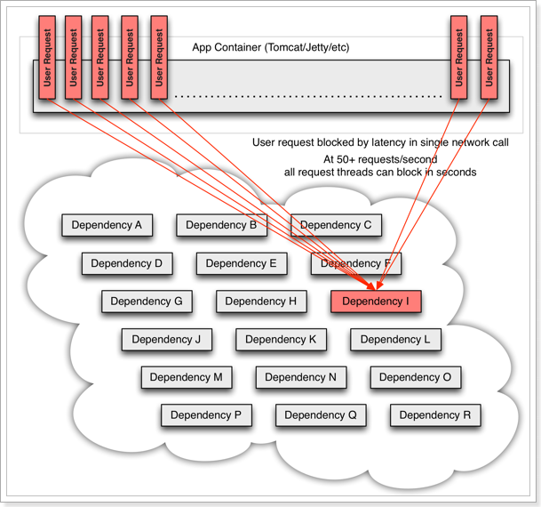
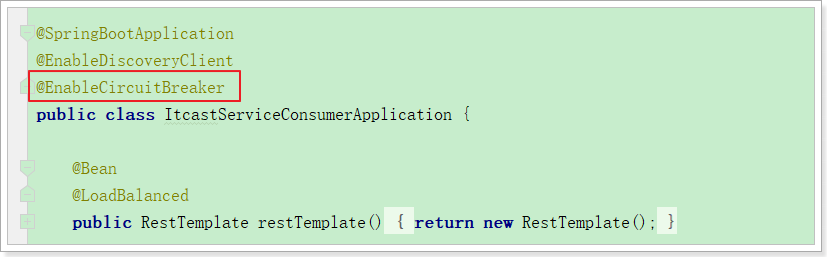
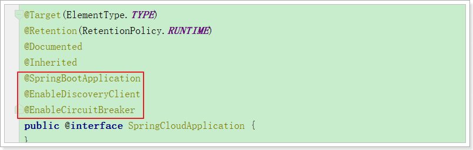
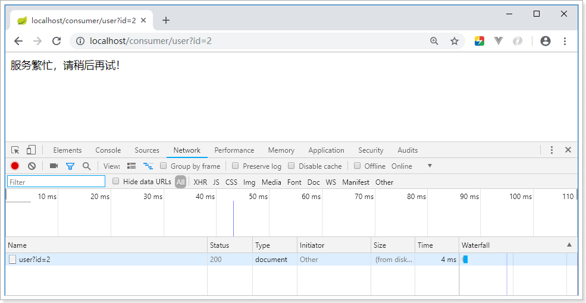

Hystrix也是Netflix公司的一款组件，熔断保护机制，处理关于雪崩问题：
Hystrix
简介
Hystrix,英文意思是豪猪，全身是刺，看起来就不好惹，是一种保护机制。
Hystrix也是Netflix公司的一款组件。
主页：https://github.com/Netflix/Hystrix/
那么Hystix的作用是什么呢？具体要保护什么呢？
Hystix是Netflix开源的一个延迟和容错库，用于隔离访问远程服务、第三方库，防止出现级联失败。
雪崩问题
微服务中，服务间调用关系错综复杂，一个请求，可能需要调用多个微服务接口才能实现，会形成非常复杂的调用链路：

如图，一次业务请求，需要调用A、P、H、I四个服务，这四个服务又可能调用其它服务。
如果此时，某个服务出现异常：

例如微服务I发生异常，请求阻塞，用户不会得到响应，则tomcat的这个线程不会释放，于是越来越多的用户请求到来，越来越多的线程会阻塞：

服务器支持的线程和并发数有限，请求一直阻塞，会导致服务器资源耗尽，从而导致所有其它服务都不可用，形成雪崩效应。
这就好比，一个汽车生产线，生产不同的汽车，需要使用不同的零件，如果某个零件因为种种原因无法使用，那么就会造成整台车无法装配，陷入等待零件的状态，直到零件到位，才能继续组装。 此时如果有很多个车型都需要这个零件，那么整个工厂都将陷入等待的状态，导致所有生产都陷入瘫痪。一个零件的波及范围不断扩大。
Hystix解决雪崩问题的手段有两个：
- 线程隔离
- 服务熔断
线程隔离，服务降级
原理
线程隔离示意图：

解读：
Hystrix为每个依赖服务调用分配一个小的线程池，如果线程池已满调用将被立即拒绝，默认不采用排队.加速失败判定时间。
用户的请求将不再直接访问服务，而是通过线程池中的空闲线程来访问服务，如果线程池已满，或者请求超时，则会进行降级处理，什么是服务降级？
服务降级：优先保证核心服务，而非核心服务不可用或弱可用。
用户的请求故障时，不会被阻塞，更不会无休止的等待或者看到系统崩溃，至少可以看到一个执行结果（例如返回友好的提示信息） 。
服务降级虽然会导致请求失败，但是不会导致阻塞，而且最多会影响这个依赖服务对应的线程池中的资源，对其它服务没有响应。
触发Hystix服务降级的情况：
- 线程池已满
- 请求超时
动手实践
引入依赖
首先在itcast-service-consumer的pom.xml中引入Hystrix依赖：
<dependency>
<groupId>org.springframework.cloud</groupId>
<artifactId>spring-cloud-starter-netflix-hystrix</artifactId>
</dependency>开启熔断

可以看到，我们类上的注解越来越多，在微服务中，经常会引入上面的三个注解，于是Spring就提供了一个组合注解：@SpringCloudApplication

因此，我们可以使用这个组合注解来代替之前的3个注解。
@SpringCloudApplication
public class ItcastServiceConsumerApplication {
@Bean
@LoadBalanced
public RestTemplate restTemplate(){
return new RestTemplate();
}
public static void main(String[] args) {
SpringApplication.run(ItcastServiceConsumerApplication.class, args);
}
}编写降级逻辑
我们改造itcast-service-consumer，当目标服务的调用出现故障，我们希望快速失败，给用户一个友好提示。因此需要提前编写好失败时的降级处理逻辑，要使用HystixCommond来完成：
@Controller
@RequestMapping("consumer/user")
public class UserController {
@Autowired
private RestTemplate restTemplate;
@GetMapping
@ResponseBody
@HystrixCommand(fallbackMethod = "queryUserByIdFallBack")
public String queryUserById(@RequestParam("id") Long id) {
String user = this.restTemplate.getForObject("http://service-provider/user/" + id, String.class);
return user;
}
public String queryUserByIdFallBack(Long id){
return "请求繁忙，请稍后再试！";
}
}要注意，因为熔断的降级逻辑方法必须跟正常逻辑方法保证：相同的参数列表和返回值声明。失败逻辑中返回User对象没有太大意义，一般会返回友好提示。所以我们把queryById的方法改造为返回String，反正也是Json数据。这样失败逻辑中返回一个错误说明，会比较方便。
说明：
- @HystrixCommand(fallbackMethod = “queryByIdFallBack”)：用来声明一个降级逻辑的方法
测试：
当itcast-service-provder正常提供服务时，访问与以前一致。但是当我们将itcast-service-provider停机时，会发现页面返回了降级处理信息：

默认FallBack
我们刚才把fallback写在了某个业务方法上，如果这样的方法很多，那岂不是要写很多。所以我们可以把Fallback配置加在类上，实现默认fallback：
@Controller
@RequestMapping("consumer/user")
@DefaultProperties(defaultFallback = "fallBackMethod") // 指定一个类的全局熔断方法
public class UserController {
@Autowired
private RestTemplate restTemplate;
@GetMapping
@ResponseBody
@HystrixCommand // 标记该方法需要熔断
public String queryUserById(@RequestParam("id") Long id) {
String user = this.restTemplate.getForObject("http://service-provider/user/" + id, String.class);
return user;
}
/**
* 熔断方法
* 返回值要和被熔断的方法的返回值一致
* 熔断方法不需要参数
* @return
*/
public String fallBackMethod(){
return "请求繁忙，请稍后再试！";
}
}- @DefaultProperties(defaultFallback = “defaultFallBack”)：在类上指明统一的失败降级方法
- @HystrixCommand：在方法上直接使用该注解，使用默认的剪辑方法。
- defaultFallback：默认降级方法，不用任何参数，以匹配更多方法，但是返回值一定一致
设置超时
在之前的案例中，请求在超过1秒后都会返回错误信息，这是因为Hystix的默认超时时长为1，我们可以通过配置修改这个值：
我们可以通过hystrix.command.default.execution.isolation.thread.timeoutInMilliseconds来设置Hystrix超时时间。该配置没有提示。
hystrix:
command:
default:
execution:
isolation:
thread:
timeoutInMilliseconds: 6000 # 设置hystrix的超时时间为6000ms改造服务提供者
改造服务提供者的UserController接口，随机休眠一段时间，以触发熔断：
@GetMapping("{id}")
public User queryUserById(@PathVariable("id") Long id) {
try {
Thread.sleep(6000);
} catch (InterruptedException e) {
e.printStackTrace();
}
return this.userService.queryUserById(id);
}服务熔断
熔断原理
熔断器，也叫断路器，其英文单词为：Circuit Breaker

熔断状态机3个状态：
- Closed：关闭状态，所有请求都正常访问。
- Open：打开状态，所有请求都会被降级。Hystix会对请求情况计数，当一定时间内失败请求百分比达到阈值，则触发熔断，断路器会完全打开。默认失败比例的阈值是50%，请求次数最少不低于20次。
- Half Open：半开状态，open状态不是永久的，打开后会进入休眠时间（默认是5S）。随后断路器会自动进入半开状态。此时会释放部分请求通过，若这些请求都是健康的，则会完全关闭断路器，否则继续保持打开，再次进行休眠计时
动手实践
为了能够精确控制请求的成功或失败，我们在consumer的调用业务中加入一段逻辑：
@GetMapping("{id}")
@HystrixCommand
public String queryUserById(@PathVariable("id") Long id){
if(id == 1){
throw new RuntimeException("太忙了");
}
String user = this.restTemplate.getForObject("http://service-provider/user/" + id, String.class);
return user;
}这样如果参数是id为1，一定失败，其它情况都成功。（不要忘了清空service-provider中的休眠逻辑）
我们准备两个请求窗口：
当我们疯狂访问id为1的请求时（超过20次），就会触发熔断。断路器会断开，一切请求都会被降级处理。
此时你访问id为2的请求，会发现返回的也是失败，而且失败时间很短，只有几毫秒左右：

不过，默认的熔断触发要求较高，休眠时间窗较短，为了测试方便，我们可以通过配置修改熔断策略：
circuitBreaker.requestVolumeThreshold=10
circuitBreaker.sleepWindowInMilliseconds=10000
circuitBreaker.errorThresholdPercentage=50解读：
- requestVolumeThreshold：触发熔断的最小请求次数，默认20
- errorThresholdPercentage：触发熔断的失败请求最小占比，默认50%
- sleepWindowInMilliseconds：休眠时长，默认是5000毫秒